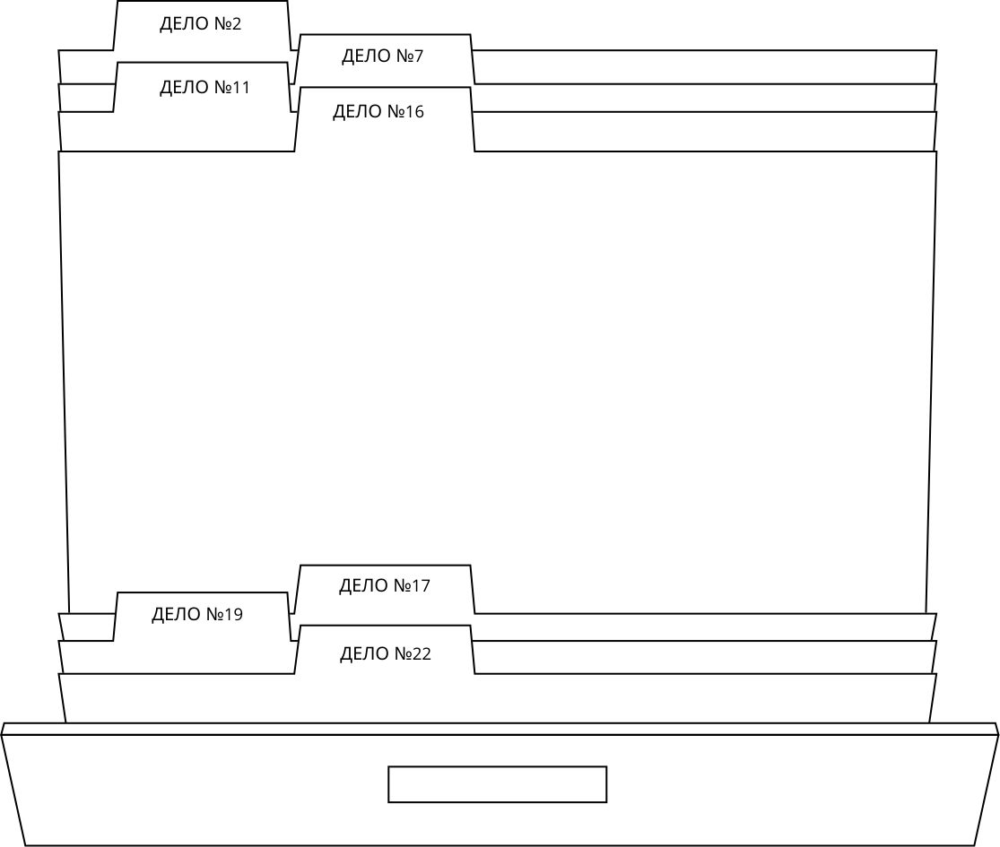

ДЖЕФФРИ ДАМЕР
21. 05. 1960
Американский серийный убийца и сексуальный преступник, действовавший в период с 1978 по 1991 год. На его счету 17 доказанных убийств молодых мужчин и подростков. Преступления Дамера отличались крайней жестокостью: он расчленял тела, занимался некрофилией и каннибализмом.